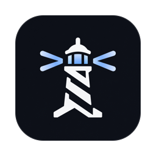
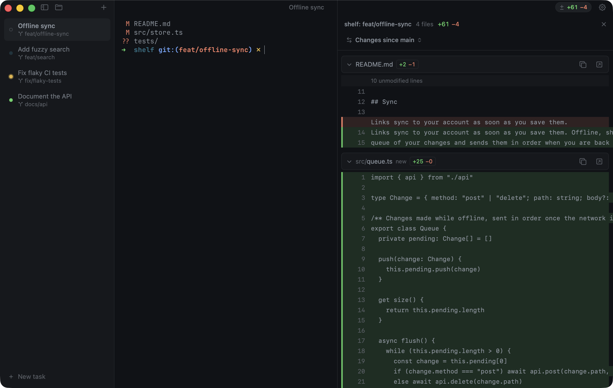

Farol A fast macOS terminal for Claude Code, Codex and other AI coding agents.
Apple silicon, macOS 14+. Free and open source.

Every agent at a glance
Run Claude Code and Codex sessions side by side. The sidebar shows which agent is working, which one needs you and which one is done.
From any app
The lighthouse in the menu bar, or a panel at the notch, keeps you posted while you work elsewhere.
Review and ship
Every changed file as a diff. Commit, push and open a pull request from there, on GitHub or GitLab.
Files and git graph
The project as a tree, a light editor for quick fixes, and a graph of every branch and commit.
A task in one step
Describe it and pick an agent. Farol opens a git worktree on a new branch and starts the agent on it, so parallel agents never touch each other's files.
Built on libghostty
Ghostty's speed, themes and config, in a native Mac app.
See Farol in motion
Questions
What is Farol?
Farol is a free, open source terminal app for macOS made for agentic coding, where AI coding agents write the code and you supervise. Each agent runs in its own session, and Farol shows which one is working, which one is waiting for you and which one is done.
What is an agentic terminal?
A terminal built for AI coding agents as well as for typing commands. Agents like Claude Code and Codex already run in a terminal. An agentic terminal app such as Farol adds what you need to supervise several at once: a session per agent, live status, notifications and a review step before you ship.
How do I run several Claude Code agents in parallel?
Press ⇧⌘N, describe the task and pick an agent. Farol creates a git worktree on a new branch and starts Claude Code or Codex there, so each agent works on its own copy of the repo. Open as many as you like.
Which coding agents does Farol work with?
Claude Code and Codex report their status once connected in Settings → Agents. Any other agent that runs in a terminal works too, and can report its status through Farol's CLI or the terminal bell.
Is Farol a fork of Ghostty?
No. Farol is its own native Mac app that embeds libghostty, the engine behind Ghostty. You get the same rendering and speed, and Farol reads your Ghostty config and themes.
How do I know when an agent needs me?
The session's dot turns yellow, macOS sends a notification and the Dock icon counts the sessions that are waiting. The menu bar item or the notch panel shows the same from any app.
Is Farol free?
Yes. Farol is open source under the MIT license. It needs a Mac with Apple silicon and macOS 14 or later.